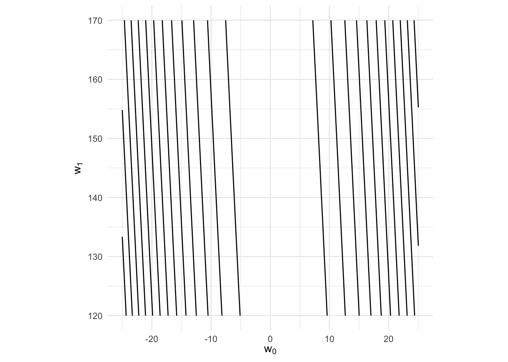
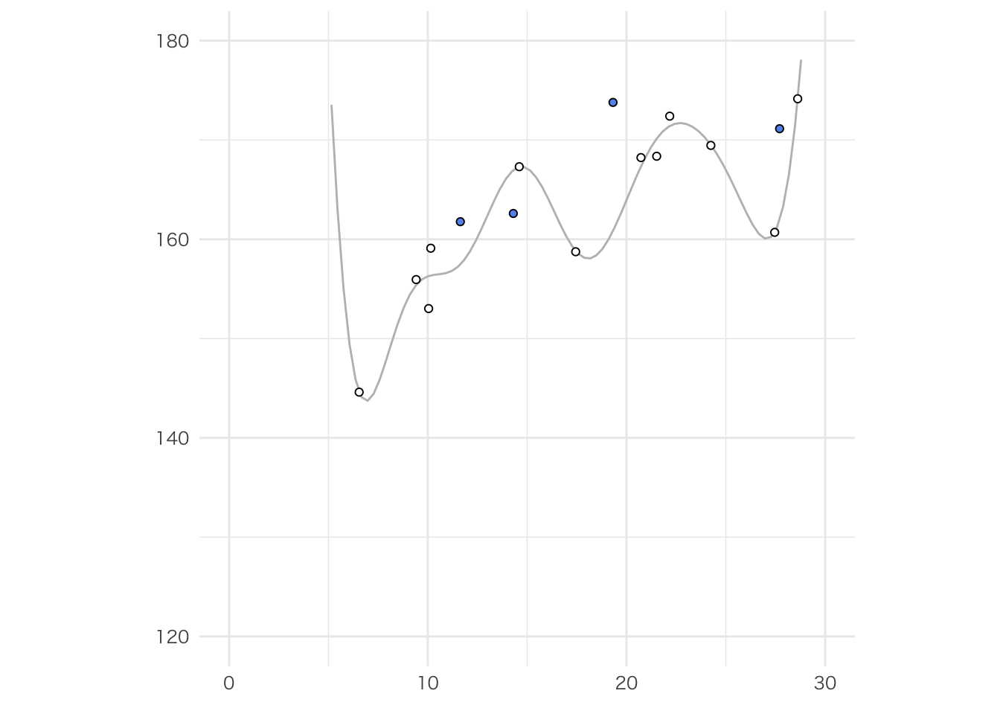

2 教師あり学習 : 回帰
{ggplot2}のフォントについて
theme_set()で指定しても文字が正しく出力されないため，無理やり対処する．
準備
まず，パッケージを読み込む．また，dataというディレクトリを作成しておく．
内容
第1節
リスト 5-1-(1)
Numpy, Matplotlibに対応するパッケージとして，{tidyverse}を用いる．グラフ描画には{ggplot2}を用いるが，これは{tidyverse}を読み込めば，連動して読み込まれる．
データ生成 ———
# Python
np.random.seed(seed=1) # 乱数を固定する
X_min, X_max = 4, 30 # X の下限と上限（表示用）
N = 16 # データの個数
X = 5 + 25 * np.random.rand(N) # X の生成
prm = [170, 108, 0.2] # データ生成のパラメータ
T = prm[0] - prm[1] * np.exp(-prm[2] * X) \
+ 4 * np.random.randn(N) # (A) 目標データの生成
np.savez( # (B) データの保存
"ch5_data.npz",
X=X, T=T, X_min=X_min, X_max=X_max, N=N,
)# R
set.seed(1) # 乱数を固定する
X_min <- 4; X_max <- 30 # X の下限と上限
N <- 16 # データの個数
X <- 5 + 25 * runif(N) # X の生成
prm <- c(170, 108, 0.2) # データ生成のパラメタ
t <- prm[1] - prm[2] * exp(-prm[3] * X) + 4 * rnorm(N) # (A) 目標データの生成
save( # (B) データの保存
list = c('X', 't', 'X_min', 'X_max', 'N'),
file = 'data/ch5_data.Rdata'
)np.random.seed()では乱数の種を指定している．Rにおけるset.seed()と同じである．
np.random.rand()は\([0, 1]\)の一様分布から乱数を発生させる関数である．Rではrunif()を用いると同じ操作が可能だ．
予約語
Rにおいて，TはTRUEの予約語であるため，目標データを格納するオブジェクトはtとしている．
インデックスの違い
Pythonでは，インデックスは0から始まる．例えば，\(x = [1, 2]\)というベクトルがあり，このベクトルから1つ目の要素を取り出したい場合はx[0]としなければならない．Rではx[1]であるため，注意されたい．
リスト 5-1-(2)
リスト 5-1-(3)
リスト 5-1-(4)
リスト 5-1-(5)
データ表示 ———
リスト 5-1-(6)
平均二乗誤差(MSE)関数 ———
各w0、w1で平均二乗誤差(MSE)を計算 ———
# Python
w0_n, w1_n = 100, 100 # グラフ表示の解像度
w0_min, w0_max = -25, 25 # w0の計算範囲
w1_min, w1_max = 120, 170 # w1の計算範囲
w0 = np.linspace(w0_min, w0_max, w0_n) # w0を準備
w1 = np.linspace(w1_min, w1_max, w1_n) # w1を準備
J = np.zeros((w1_n, w0_n)) # MSEを入れる配列Jを準備
# グリッド状の点(w0, w1)に対してJを計算
for i0 in range(w0_n):
for i1 in range(w1_n):
w = np.array([w0[i0], w1[i1]])
J[i1, i0] = mse_line(X, T, w)
ww0, ww1 = np.meshgrid(w0, w1) # グリッド座標の作成# R
w0_n <- 100; w1_n <- 100
w0_min <- -25; w0_max <- 25
w1_min <- 120; w1_max <- 170
w0 <- seq(w0_min, w0_max, length.out = w0_n)
w1 <- seq(w1_min, w1_max, length.out = w1_n)
J <- array(0, dim = c(w1_n, w0_n))
for (i0 in 1:w0_n) {
for (i1 in 1:w1_n) {
w <- array(c(w0[i0], w1[i1]), dim = c(1, 2))
J[i0, i1] <- mse_line(X, t, w)
}
}
grid_w0w1 <- expand_grid(w0, w1)グラフ描画 ———
- サーフェス表示
# Python
plt.figure(figsize=(9.5, 4))
plt.subplots_adjust(wspace=0.5)
ax = plt.subplot(1, 2, 1, projection="3d")
ax.plot_surface(
ww0, ww1, J,
rstride=10, cstride=10, alpha=0.3, color="blue", edgecolor="black",
)
ax.set_xticks([-20, 0, 20]) # x軸の目盛り指定
ax.set_yticks([120, 140, 160]) # y軸の目盛り指定
ax.view_init(20, -60) # グラフの向きの指定# R
persp(w0, w1, J, theta = 40, phi = 20, lwd = 0.3,
xlab = expression(w[0]), ylab = expression(w[1]), zlab = '')- 等高線表示
# R
df <- grid_w0w1 |>
mutate(J = rep(NA, times = n()))
n <- 1
for (i in 1:w0_n) {
for (j in 1:w1_n) {
df$J[n] <- J[i, j]
n <- n + 1
}
}
df |>
ggplot() +
geom_contour(aes(x = w0, y = w1, z = J),
color = 'black') +
xlim(-25, 25) + ylim(120, 170) +
coord_fixed(ratio = 50 / 50) +
labs(x = expression(w[0]), y = expression(w[1])) +
theme_minimal()
リスト 5-1-(7)
平均二乗誤差(MSE)の勾配 ———
リスト 5-1-(8)
リスト 5-1-(9)
勾配法 ———
# Python
def fit_line_num(x, t, w_init):
# パラメータ
alpha = 0.001 # 学習率
tau_max = 100000 # 繰り返しの最大数
eps = 0.1 # 繰り返し計算を終了するための閾値
# 勾配法
w = np.zeros((tau_max + 1, 2)) # 変化するwの履歴を入れる配列
w[0, :] = w_init # wの初期値をセット
for tau in range(tau_max):
dmse = dmse_line(x, t, w[tau, :])
w[tau + 1, 0] = w[tau, 0] - alpha * dmse[0] # 式5-6
w[tau + 1, 1] = w[tau, 1] - alpha * dmse[1] # 式5-7
if max(np.absolute(dmse)) < eps: # 終了判定
break # tau のループから抜ける
w_final = w[tau + 1, :] # 最終的に得られたw
w_hist = w[: tau + 2, :] # wの履歴で更新した分を抜き出す
return w_final, dmse, w_hist# R
fit_line_num <- function(x, t, w_init) {
# パラメタ
alpha <- 0.001 # 学習率
tau_max <- 100000 # 繰り返しの最大数
eps <- 0.1 # 繰り返し計算を終了するための閾値
# 勾配法
w <- array(0, dim = c(tau_max + 1, 2)) # 変化するwの履歴を入れる配列
w[1,] <- w_init # wの初期値をセット
for (tau in 1:tau_max) {
dmse <- dmse_line(x, t, w[tau,])
w[tau + 1, 1] <- w[tau, 1] - alpha * dmse[1] # 式5-6
w[tau + 1, 2] <- w[tau, 2] - alpha * dmse[2] # 式5-7
if (max(abs(dmse)) < eps) break # 終了判定, tauのループから抜ける
}
w_final <- w[tau + 1,] # 最終的に得られたw
w_hist <- w[1:(tau + 2),] # wの履歴で更新した分を抜き出す
res <- list(w_final = w_final, dmse = dmse, w_hist = w_hist)
return(res)
}メイン ———
# Python
# 勾配法でwを計算
w_init = np.array([10.0, 165.0]) # wの初期値
w, dmse, w_history = fit_line_num(X, T, w_init) # wを計算
mse = mse_line(X, T, w) # MSEを計算
# 結果表示
print(f"繰り返し回数 {w_history.shape[0]-1}")
print(f"w0 = {w[0]:.6f}, w1 = {w[1]:.6f}")
print(f"dMSE = [{dmse[0]:.6f}, {dmse[1]:.6f}]")
print(f"MSE = {mse:.6f}")
print(f"SD = {np.sqrt(mse):.6f} cm")# R
# 勾配法でwを計算
w_init <- array(c(10, 165), dim = c(1, 2)) # wの初期値
res <- fit_line_num(X, t, w_init) # wを計算
w <- res$w_final; dmse <- res$dmse; w_history <- res$w_hist
mse <- mse_line(X, t, w) # MSEを計算
cat('繰り返し数', nrow(w_history))
cat('w0 =', round(w[1],6), 'w1 =', round(w[2], 6))
cat('dMSE =', '[', dmse[1], ',', dmse[2], ']')
cat('MSE =', round(mse, 6))
cat('SD =', sqrt(mse) |> round(6), 'cm')繰り返し数 14410w0 = 0.867801 w1 = 148.3728dMSE = [ -0.004864737 , 0.09999624 ]MSE = 26.47251SD = 5.145144 cmグラフ描画 ———
# Python
plt.figure(figsize=(4, 4))
# 等高線表示
cont = plt.contour(
ww0, ww1, J, # リスト5-1-(6)で作成済
colors="black", levels=[100, 1000, 10000, 100000],
)
cont.clabel(fmt="%1.0f", fontsize=8)
# 等高線の上に、過去のすべてのwをプロット
plt.plot(
w_history[:, 0], w_history[:, 1], "gray",
marker=".", # マーカーの形
markersize=10, # マーカーの大きさ
markeredgecolor="cornflowerblue", # マーカーの輪郭の色
)
plt.grid()
plt.show()# R
ggplot() +
geom_contour(data = df,
mapping = aes(w0, w1, z = J),
color = 'black') +
geom_point(data = tibble(x_plt = w_history[,1], y_plt = w_history[,2]),
mapping = aes(x = x_plt, y = y_plt),
color = 'cornflowerblue') +
xlim(-25, 25) + ylim(120, 170) +
coord_fixed(ratio = 50 / 50) +
labs(x = expression(w[0]), y = expression(w[1])) +
theme_minimal()
リスト 5-1-(10)
線の表示 ———
メイン ———
リスト 5-1-(11)
解析解 ———
メイン ———
w0 = 0.89 w1 = 147.99MSE = 26.45SD = 5.14 cmグラフ描画 ———
第2節
リセット
フォントを指定しているmyfオブジェクトは消さない．
リスト 5-2-(1)
データのロード ———
2次元データ生成 ———
リスト 5-2-(2)
[1] 11.64 14.30 19.32 27.71 10.04 27.46 28.62 21.52 20.73 6.54 10.15 9.41
[13] 22.18 14.60 24.25 17.44 [1] 58.94 61.17 67.79 70.55 54.51 57.75 70.73 66.67 66.24 47.48 61.24 56.71
[13] 67.11 59.95 68.29 57.87 [1] 161.77 162.60 173.78 171.14 153.02 160.70 174.15 168.36 168.23 144.60
[11] 159.10 155.94 172.40 167.31 169.45 158.74リスト 5-2-(3)
2次元データの表示 ———
# Python
def show_data2d(ax, x0, x1, t): # axは3dグラフ描画のため
for i in range(len(x0)):
ax.plot( # データ点の下の直線の描画
[x0[i], x0[i]], # 直線の両端のx座標
[x1[i], x1[i]], # 直線の両端のy座標
[120, t[i]], # 直線の両端のz座標
color="gray",
)
ax.plot( # データ点の描画
x0, # x座標
x1, # y座標
t, # z座標
"cornflowerblue", # 色
marker="o", # マーカーの形状
linestyle="None", # 点をつなげる線は描かない
markeredgecolor="black", # マーカーの輪郭の色
markersize=6, # マーカーのサイズ
markeredgewidth=0.5, # マーカーの輪郭線の太さ
)
ax.view_init(elev=35, azim=-75) # グラフの向きの指定このリストにおけるRの操作は必要ない．
メイン ———
グラフ描画には{scatterplot3d}パッケージを用いた．
リスト 5-2-(4)
面の表示 ———
# Python
def show_plane(ax, w):
# 表示データの計算
x0_n, x1_n = 5, 5
x0 = np.linspace(X0_min, X0_max, x0_n)
x1 = np.linspace(X1_min, X1_max, x1_n)
xx0, xx1 = np.meshgrid(x0, x1) # グリッド座標の作成
y = w[0] * xx0 + w[1] * xx1 + w[2] # (A) 式5-28
# サーフェス表示
ax.plot_surface(
xx0, xx1, y,
rstride=1, cstride=1, alpha=0.3, color="blue", edgecolor="black",
)# R
show_plane <- function(w) {
x0_n <- 5; x1_n <- 5
x0 <- seq(X0_min, X0_max, length.out = x0_n)
x1 <- seq(X1_min, X1_max, length.out = x1_n)
y <- array(0, dim = c(x0_n, x1_n))
for (i in 1:x0_n) {
for (j in 1:x1_n) {
y[i, j] <- w[1] * x0[i] + w[2] * x1[j] + w[3]
}
}
persp(x0, x1, y, theta = 25, phi = 30,
xlab = '', ylab = '', zlab = '')
}面の平均二乗誤差(MSE)関数 ———
メイン ———
# R
w <- array(c(1.5, 1, 90), dim = c(1, 3))
mse <- mse_plane(X0, X1, t, w)
cat('SD =', sqrt(mse) |> round(2), 'cm')SD = 17.76 cmグラフ描画 ———
リスト 5-2-(5)
解析解 ———
# Python
def fit_plane(x0, x1, t):
c_tx0 = np.mean(t * x0) - np.mean(t) * np.mean(x0) # cov(t, x0)
c_tx1 = np.mean(t * x1) - np.mean(t) * np.mean(x1) # cov(t, x1)
c_x0x1 = np.mean(x0 * x1) - np.mean(x0) * np.mean(x1) # cov(x0, x1)
v_x0 = np.var(x0) # var(x0)
v_x1 = np.var(x1) # var(x1)
# 式5-34
w0 = (c_tx1 * c_x0x1 - v_x1 * c_tx0) / (c_x0x1 ** 2 - v_x0 * v_x1)
# 式5-35
w1 = (c_tx0 * c_x0x1 - v_x0 * c_tx1) / (c_x0x1 ** 2 - v_x0 * v_x1)
# 式5-36
w2 = -w0 * np.mean(x0) - w1 * np.mean(x1) + np.mean(t)
w = np.array([w0, w1, w2])
return w# R
fit_plane <- function(x0, x1, t) {
c_tx0 <- mean(t * x0) - mean(t) * mean(x0) # cov(t, x0)
c_tx1 <- mean(t * x1) - mean(t) * mean(x1) # cov(t, x1)
c_x0x1 <- mean(x0 * x1) - mean(x0) * mean(x1) # cov(x0, x1)
v_x0 <- var(x0) # var(x0)
v_x1 <- var(x1) # var(x1)
# 式5-34
w0 <- (c_tx1 * c_x0x1 - v_x1 * c_tx0) / (c_x0x1 ^ 2 - v_x0 * v_x1)
# 式5-35
w1 <- (c_tx0 * c_x0x1 - v_x0 * c_tx1) / (c_x0x1 ^ 2 - v_x0 * v_x1)
# 式5-36
w2 <- -w0 * mean(x0) - w1 * mean(x1) + mean(t)
w <- array(c(w0, w1, w2), dim = c(1, 3))
return(w)
}メイン ———
w0 = 0.17 w1 = 1 w2 = 98.61SD = 2.47 cmグラフ描画 ———
第3節
リセット
フォントを指定しているmyfオブジェクトは消さない．
リスト 5-3-(1)
データのロード ———
リスト 5-3-(2)
ガウス関数 ———
リスト 5-3-(3)
メイン ———
# R
M <- 4 # ガウス関数の数
mu <- seq(5, 30, length.out = M) # 平均パラメタ
s <- mu[2] - mu[1] # (A) 標準偏差パラメタ
xb <- seq(X_min, X_max, length.out = 100)
y <- array(0, dim = c(100, M)) |>
data.frame() |>
rename(mu1 = 'X1', mu2 = 'X2', mu3 = 'X3', mu4 = 'X4')
for (j in 1:M) {
y[, j] <- gauss(xb, mu[j], s) # ガウス関数
}{ggplot2}で描画する際のデータには，tidyであることが望ましいため，便宜上yの行数と列数を入れ替えている．
グラフ描画 ———
# R
y |>
pivot_longer(cols = 1:ncol(y),
names_to = 'mu',
values_to = 'gauss') |>
mutate(x_plt = rep(xb, each = 4)) |>
ggplot() +
geom_line(aes(x = x_plt, y = gauss,
color = mu)) +
xlim(0, 30) + ylim(0, 1) +
coord_fixed(ratio = 30 / 1) +
labs(x = element_blank(), y = element_blank()) +
theme_minimal() +
theme(legend.position = 'none')pivot_longer()は，wideな(tidyではない)データをlongな(tidyである)データに変換する関数である．cols引数で変換する列を選択し，names_to, values_to引数で変換後の列名を指定している(詳しい解説は宋・矢内『私たちのR』第17章を参照されたい)．
リスト 5-3-(4)
線形基底関数モデル ———
# R
gauss_func <- function(w, x) {
m <- length(w) - 1 # ガウス関数の数
mu <- seq(5, 30, length.out = m)
s = mu[2] - mu[1]
# xと同じサイズで要素が0のarray型を作成
y <- array(0, dim = c(1, length(x)))
# ここでは式5-66ではなく式5-65で実装
for (j in 1:m) {
y <- y + w[j] * gauss(x, mu[j], s)
}
y <- y + w[m + 1] # phiをかけないパラメタを最後に加える
return(y)
}リスト 5-3-(5)
線形基底関数モデルの平均二乗誤差(MSE) ———
リスト 5-3-(6)
線形基底関数モデルの厳密解 ———
# R
def fit_gauss_func(x, t, m):
mu = np.linspace(5, 30, m)
s = mu[1] - mu[0]
n = x.shape[0]
# 式5-69 の計画行列phiを作成
phi = np.ones((n, m + 1)) # (A) 要素が1のn x (m+1)行列
for j in range(m): # (B) 0～m-1列に値を割り振る
phi[:, j] = gauss(x, mu[j], s)
# 式5-68 で厳密解のwを計算
w = np.linalg.inv(phi.T @ phi) @ phi.T @ t
return w# R
fit_gauss_func <- function(x, t, m) {
mu <- seq(5, 30, length.out = m)
s <- mu[2] - mu[1]
n <- length(x)
# 式5-69 の計画行列phiを作成
phi <- array(1, dim = c(n, m + 1)) # (A) 要素が1のn x (m + 1)行列
for (j in 1:m) { # (B) 0 ~ (m - 1)列に値を割り振る
phi[, j] <- gauss(x, mu[j], s)
}
# 式5-68 で厳密解のwを計算
w <- solve(t(phi) %*% phi) %*% t(phi) %*% t
return(w)
}リスト 5-3-(7)
ガウス基底関数表示 ———
メイン ———
w = 3.81 42.59 2.41 49.8 109.95SD = 4.02 cmグラフ描画 ———
リスト 5-3-(8)
# Python
M = [2, 4, 7, 9] # 調べるMの値
plt.figure(figsize=(10, 2.5))
plt.subplots_adjust(wspace=0.3)
for i in range(len(M)):
plt.subplot(1, len(M), i + 1)
w = fit_gauss_func(X, T, M[i]) # wを計算
mse = mse_gauss_func(X, T, w) # MSEを計算
# グラフ描画
show_gauss_func(w) # 線形基底関数
plt.plot( # データ点
X, T, "cornflowerblue",
marker="o", linestyle="None", markeredgecolor="black",
)
plt.title(f"M={M[i]:d}, SD={np.sqrt(mse):.2f}")
plt.xlim(X_min, X_max)
plt.ylim(120, 180)
plt.grid()
plt.show()# R
M <- c(2, 4, 7, 9) # 調べるMの値
for (i in 1:length(M)) {
w <- fit_gauss_func(X, t, M[i]) # wを計算
mse <- mse_gauss_func(X, t, w) # MSEを計算
p <- show_gauss_func(w) +
geom_point(data = tibble(x_plt = X, y_plt = t),
mapping = aes(x = x_plt, y = y_plt),
color = 'cornflowerblue') +
xlim(0, 30) + ylim(120, 180) +
coord_fixed(ratio = 30 / 60) +
labs(x = element_blank(), y = element_blank(),
title = paste('SD =', sqrt(mse) |> round(2)
|> as.character(), 'cm'))
plot(p)
}リスト 5-3-(9)
メイン ———
グラフ描画 ———
# R
tibble(x_plt = M, y_plt = sd) |>
ggplot() +
geom_line(aes(x = x_plt, y = y_plt),
color = 'cornflowerblue') +
geom_point(aes(x = x_plt, y = y_plt),
fill = 'cornflowerblue',
color = 'black',
shape = 21) +
xlim(2, 9) + ylim(3.00, 4.5) +
coord_fixed(ratio = 7 / (4.5 - 3.00)) +
scale_x_continuous(breaks = c(2:9),
labels = c(2:9)) +
labs(x = 'M', y = 'SD') +
theme_minimal()リスト 5-3-(10)
訓練データとテストデータに分割———
メイン ———
# Python
M = [2, 4, 7, 9] # 調べるMの値
plt.figure(figsize=(10, 2.5))
plt.subplots_adjust(wspace=0.3)
for i in range(len(M)):
w = fit_gauss_func(X_train, T_train, M[i]) # wを計算
sd = np.sqrt(mse_gauss_func(X_test, T_test, w)) # SDを計算
# グラフ描画
plt.subplot(1, len(M), i + 1)
show_gauss_func(w) # 線形基底関数
plt.plot( # 訓練データ
X_train, T_train, "white",
marker="o", linestyle="None", markeredgecolor="black",
label="training",
)
plt.plot( # テストデータ
X_test, T_test, "cornflowerblue",
marker="o", linestyle="None", markeredgecolor="black",
label="test",
)
plt.title(f"M={M[i]:d}, SD={sd:.2f}")
plt.legend(loc="lower right", fontsize=10, numpoints=1)
plt.xlim(X_min, X_max)
plt.ylim(120, 180)
plt.grid()
plt.show()# R
M <- c(2, 4, 7, 9)
for (i in 1:length(M)) {
w <- fit_gauss_func(X_train, T_train, M[i])
sd <- sqrt(mse_gauss_func(X_test, T_test, w))
p <- show_gauss_func(w) +
geom_point(data = tibble(x_plt = X_train, y_plt = T_train),
mapping = aes(x = x_plt, y = y_plt),
fill = 'white',
color = 'black',
shape = 21) +
geom_point(data = tibble(x_plt = X_test, y_plt = T_test),
mapping = aes(x = x_plt, y = y_plt),
fill = 'cornflowerblue',
color = 'black',
shape = 21) +
xlim(0, 30) + ylim(120, 180) +
coord_fixed(ratio = 30 / 60) +
labs(x = element_blank(), y = element_blank())
plot(p)
}
リスト 5-3-(11)
メイン ———
# Python
M = range(2, 10) # 調べるMの値、2から9
sd_train = np.zeros(len(M))
sd_test = np.zeros(len(M))
for i in range(len(M)):
# wを計算
w = fit_gauss_func(X_train, T_train, M[i])
# 訓練データのSDを計算
sd_train[i] = np.sqrt(mse_gauss_func(X_train, T_train, w))
# テストデータのSDを計算
sd_test[i] = np.sqrt(mse_gauss_func(X_test, T_test, w))グラフ描画 ———
# Python
plt.figure(figsize=(5, 4))
plt.plot( # 訓練データのSD
M, sd_train, "black",
marker="o", linestyle="-",
markerfacecolor="white", markeredgecolor="black",
label="training",
)
plt.plot( # テストデータのSD
M, sd_test, "cornflowerblue",
marker="o", linestyle="-",
markeredgecolor="black",
label="test",
)
plt.legend(loc="upper left", fontsize=10)
plt.ylim(0, 12)
plt.grid()
plt.show()# R
tibble(x_plt = c(M, M),
y_plt = c(sd_train, sd_test),
train_test = rep(c('training', 'test'), each = length(M))) |>
ggplot(aes(x = x_plt, y = y_plt)) +
geom_line(aes(color = train_test)) +
geom_point(aes(fill = train_test),
color = 'black', shape = 21) +
xlim(2, 9) + ylim(1, 10) +
coord_fixed(ratio = 7 / 9) +
scale_color_discrete(name = element_blank()) +
scale_fill_discrete(name = element_blank()) +
labs(x = element_blank(), y = element_blank()) +
theme_minimal()
リスト 5-3-(12)
K 分割交差検証 ———
# Python
def kfold_gauss_func(x, t, m, k):
n = x.shape[0]
mse_train = np.zeros(k)
mse_test = np.zeros(k)
for i in range(0, k):
# 訓練データとテストデータに分割
# (A) テストデータのインデックス
i_test = np.fmod(range(n), k)
x_test = x[i_test == i] # テストデータ x
t_test = t[i_test == i] # テストデータ t
x_train = x[i_test != i] # 訓練データ x
t_train = t[i_test != i] # 訓練データ t
# wを訓練データで決める
w = fit_gauss_func(x_train, t_train, m)
# 訓練データのMSEを計算
mse_train[i] = mse_gauss_func(x_train, t_train, w)
# テストデータのMSEを計算
mse_test[i] = mse_gauss_func(x_test, t_test, w)
return mse_train, mse_test# R
kfold_gauss_func <- function(x, t, m, k) {
n <- length(x)
mse_train <- rep(0, times = k)
mse_test <- rep(0, times = k)
for (i in 1:k) {
i_test <- 1:n %% k
x_test <- x[i_test == (i - 1)] # Rのインデックスの都合上(i - 1)
t_test <- t[i_test == (i - 1)]
x_train <- x[i_test != (i - 1)]
t_train <- t[i_test != (i - 1)]
w <- fit_gauss_func(x_train, t_train, m)
mse_train[i] <- mse_gauss_func(x_train, t_train, w)
mse_test[i] <- mse_gauss_func(x_test, t_test, w)
}
res <- list(mse_train = mse_train, mse_test = mse_test)
return(res)
}Rのインデックスの都合上，i - 1としている．
リスト 5-3-(13)
Rでmodの計算をするには，%%を用いるとよい．
リスト 5-3-(14)
リスト 5-3-(15)
メイン ———
# Python
M = range(2, 8)
K = 16
Cv_Gauss_train = np.zeros((K, len(M)))
Cv_Gauss_test = np.zeros((K, len(M)))
for i in range(0, len(M)):
Cv_Gauss_train[:, i], Cv_Gauss_test[:, i] \
= kfold_gauss_func(X, T, M[i], K) # k分割交差検定
# 訓練データの各分割におけるMSEの平均、の平方根
sd_Gauss_train = np.sqrt(np.mean(Cv_Gauss_train, axis=0))
# テストデータの各分割におけるMSEの平均、の平方根
sd_Gauss_test = np.sqrt(np.mean(Cv_Gauss_test, axis=0))
np.save("ch5_Gauss_test.npy", sd_Gauss_test) # 結果の保存# R
M <- 2:7
K <- 16
Cv_Gauss_train <- array(0, dim = c(K, length(M)))
Cv_Gauss_test <- array(0, dim = c(K, length(M)))
for (i in 1:length(M)) {
res <- kfold_gauss_func(X, t, M[i], K)
Cv_Gauss_train[, i] <- res$mse_train
Cv_Gauss_test[, i] <- res$mse_test
}
sd_Gauss_train <- apply(Cv_Gauss_train, 2, mean) |>
sqrt()
sd_Gauss_test <- apply(Cv_Gauss_test, 2, mean) |>
sqrt()
save(list = 'sd_Gauss_test', file = 'data/ch5_Gauss_test.Rdata')グラフ描画 ———
# Python
plt.figure(figsize=(5, 4))
# 訓練データに対するMSEのグラフ
plt.plot(
M, sd_Gauss_train, "black",
marker="o", linestyle="-",
markerfacecolor="white", markeredgecolor="black",
label="training",
)
# テストデータに対するMSEのグラフ
plt.plot(
M, sd_Gauss_test, "cornflowerblue",
marker="o", linestyle="-",
markeredgecolor="black",
label="test",
)
plt.legend(loc="upper left", fontsize=10)
plt.ylim(0, 20)
plt.grid()
plt.show()# R
tibble(x_plt = c(M, M),
y_plt = c(sd_Gauss_test, sd_Gauss_train),
col = rep(c('test', 'train'), each = length(M))) |>
ggplot() +
geom_line(aes(x = x_plt, y = y_plt,
color = col)) +
geom_point(aes(x = x_plt, y = y_plt,
fill = col),
color = 'black', shape = 21) +
xlim(2, 7) + ylim(3, 9) +
coord_fixed(ratio = 5 / 6) +
labs(x = element_blank(), y = element_blank()) +
scale_color_discrete(name = element_blank(),
label = c('test', 'training')) +
scale_fill_discrete(name = element_blank(),
label = c('test', 'training')) +
theme_minimal()リスト 5-3-(16)
メイン ———
# R
M <- 2 # 最適なM=2に設定
w <- fit_gauss_func(X, t, M)
sd <- sqrt(mse_gauss_func(X, t, w))
cat('SD =', round(sd, 2))SD = 4.11リスト 5-3-(15)より，今回の最適なMは2であることがわかるのでM = 2としている．
グラフ描画 ———
第4節
リセット
フォントを指定しているmyfオブジェクトは消さない．
リスト 5-4-(1)
データのロード ———
モデル A ———
モデル A 表示 ———
モデル A の平均二乗誤差(MSE) ———
リスト 5-4-(2)
Rの最適化関数にはoptimize()とoptim()がある．最適化したいパラメタが1つの場合は前者を，2つ以上の場合は後者を用いる．今回は，w[1], w[2], w[3]の3つのパラメタを求めたいため，optim()関数を用いる．
モデル A のパラメータ最適化
optim()関数は，第一引数に求めたいパラメタの初期値を指定し，fn引数に関数を指定する．fn引数に指定する関数は引数を1つにしなければならない．引数を3つ持っているmse_model_A()関数は指定できないため，optim()関数内で改めて関数を定義している．
また，パウェルアルゴリズムは実装されていないため，共役勾配法を用いて最適化を行なっている．
リスト 5-4-(3)
メイン ———
w0 = 126.25 w1 = -26.25 w2 = -0.02SD = 5.42 cmグラフ描画 ———
# R
show_model_A(w) +
geom_point(data = tibble(x_plt = X, y_plt = t),
mapping = aes(x = x_plt, y = y_plt),
color = 'cornflowerblue') +
xlim(0, 30) + ylim(140, 180) +
coord_fixed(ratio = 30 / 40) +
labs(x = '年齢x', y = '身長t')教科書とは曲線の形がやや異なるが，データにはフィットしていそうである．
リスト 5-4-(4)
交差検証 モデル A ———
# Python
def kfold_model_A(x, t, k):
n = len(x)
mse_train = np.zeros(k)
mse_test = np.zeros(k)
for i in range(0, k):
# 訓練データとテストデータに分割
i_test = np.fmod(range(n), k)
x_test = x[i_test == i]
t_test = t[i_test == i]
x_train = x[i_test != i]
t_train = t[i_test != i]
# 精度を上げるため
# リスト5-4-(3)で得た値を初期値に設定
w_init = np.array([169.04, 113.66, 0.22])
w = fit_model_A(w_init, x_train, t_train)
mse_train[i] = mse_model_A(w, x_train, t_train)
mse_test[i] = mse_model_A(w, x_test, t_test)
return mse_train, mse_test# R
kfold_model_A <- function(x, t, k) {
n <- length(x)
mse_train <- rep(0, times = k)
mse_test <- rep(0, times = k)
for (i in 1:k) {
i_test <- (1:n %% k) + 1
x_test <- x[i_test == i]
t_test <- t[i_test == i]
x_train <- x[i_test != i]
t_train <- t[i_test != i]
w_init <- array(c(126.25, -26.25, -0.02), dim = c(3, 1))
w <- optim(w_init,
fn = function(w) {
y <- model_A(x_train, t_train)
mse <- mean((y - t_train) ^ 2)
return(mse)
},
method = 'CG')
mse_train[i] <- mse_model_A(w$par, x = x_train, t = t_train)
mse_test[i] <- mse_model_A(w$par, x = x_test, t = t_test)
}
return(list(mse_train = mse_train, mse_test = mse_test))
}メイン ———
# Python
# model A の交差検定
K = 16
Cv_A_train, Cv_A_test = kfold_model_A(X, T, K)
sd_A_test = np.sqrt(np.mean(Cv_A_test))
# 線形基底関数モデルの交差検定の結果のロード
sd_Gauss_test = np.load("ch5_Gauss_test.npy")
# 結果のまとめ
SDs = np.append(sd_Gauss_test[0:5], sd_A_test)
# 結果表示
print(f"Gauss(M=3) SD = {sd_Gauss_test[1]:.2f} cm")
print(f"Model A SD = {sd_A_test:.2f} cm")# R
K <- 16
Cv_A_res <- kfold_model_A(X, t, K)
Cv_A_train <- Cv_A_res$mse_train; Cv_A_test <- Cv_A_res$mse_test
sd_A_test <- sqrt(mean(Cv_A_test))
load('data/ch5_Gauss_test.Rdata')
SDs <- append(sd_Gauss_test[1:5], sd_A_test)
cat('Gauss (M = 3) SD =', sd_Gauss_test[2] |> round(2), 'cm')
cat('Model A SD =', sd_A_test |> round(2), 'cm')Gauss (M = 2) SD = 6.36 cmModel A SD = 5.42 cmM = 2を用いたため．
グラフ描画 ———